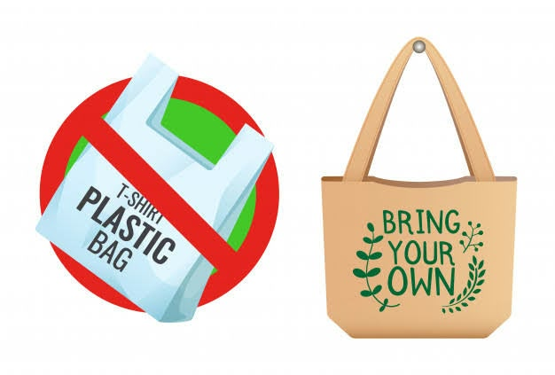
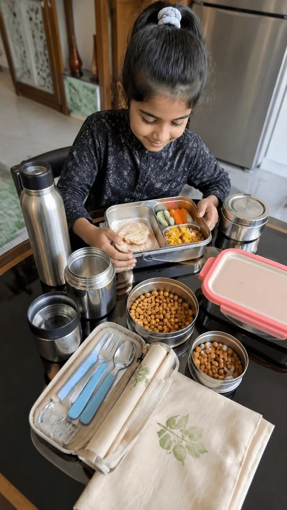
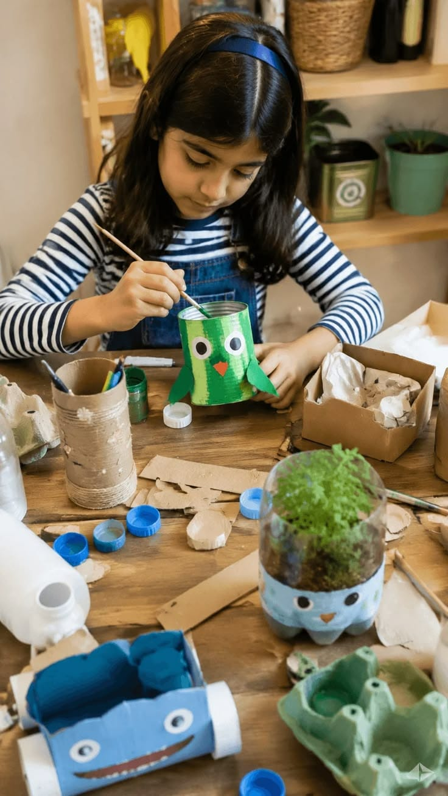

Mengubah Limbah Jadi Rupiah Dengan Daur Ulang
Perkembangan teknologi yang semakin pesat membuat penggunaan perangkat elektronik seperti komputer, keyboard, mouse, handphone, dan perangkat lainnya semakin meningkat. Namun, perangkat elektronik yang sudah rusak atau tidak digunakan lagi dapat menjadi limbah elektronik (e-waste) yang berpotensi mencemari lingkungan apabila tidak dikelola dengan baik.
EcoCycle merupakan sebuah sistem atau cara ramah lingkungan yang bertujuan untuk mengurangi sampah dengan mendaur ulang dan menggunakan kembali barang-barang secara terus-menerus, mirip seperti siklus alam di bumi. Melalui sistem ini, barang yang sudah tidak terpakai tidak langsung dibuang begitu saja, melainkan diolah kembali agar bisa bermanfaat lagi tanpa merusak lingkungan. Tujuan utamanya adalah untuk menjaga alam tetap bersih, menghemat energi, dan mencegah penumpukan sampah yang bisa mencemari planet kita

Reduce adalah prinsip mengurangi penggunaan barang yang dapat menghasilkan sampah agar jumlah limbah yang dihasilkan semakin sedikit. Contohnya, mengurangi pembelian barang elektronik yang tidak diperlukan dan menggunakan barang secara bijak agar tidak cepat menjadi sampah. Contoh: Mengurangi pembelian bahan baru dengan menggunakan keyboard bekas.

Reuse adalah prinsip menggunakan kembali barang yang masih dapat dimanfaatkan tanpa harus melalui proses pengolahan terlebih dahulu. Prinsip ini bertujuan memperpanjang masa pakai suatu barang sehingga dapat mengurangi jumlah sampah. Contoh: Menggunakan kaleng bekas sebagai wadah penyimpanan alat tulis.

Recycle adalah prinsip mendaur ulang barang bekas menjadi produk baru yang memiliki nilai guna dan manfaat. Proses ini dapat membantu mengurangi penumpukan sampah serta memanfaatkan kembali bahan yang sudah tidak terpakai. Contoh: Membuat ecobrick dengan memadatkan bungkus plastik atau sachet bekas ke dalam botol plastik hingga keras agar dapat dimanfaatkan menjadi produk baru.